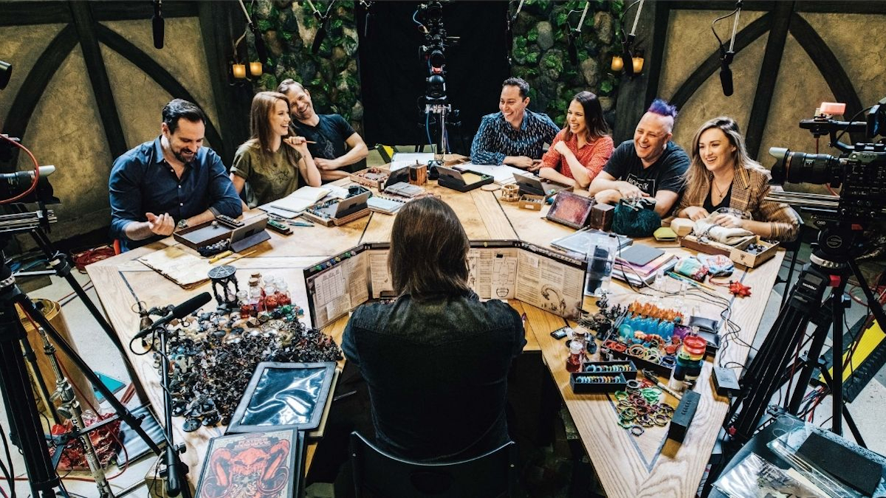
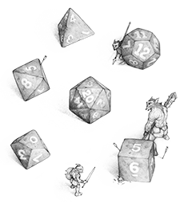
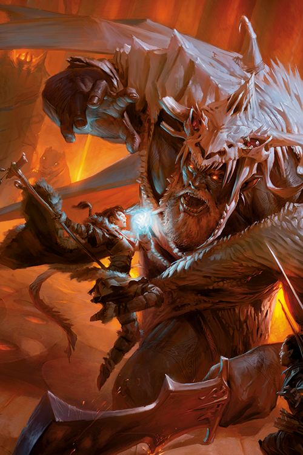
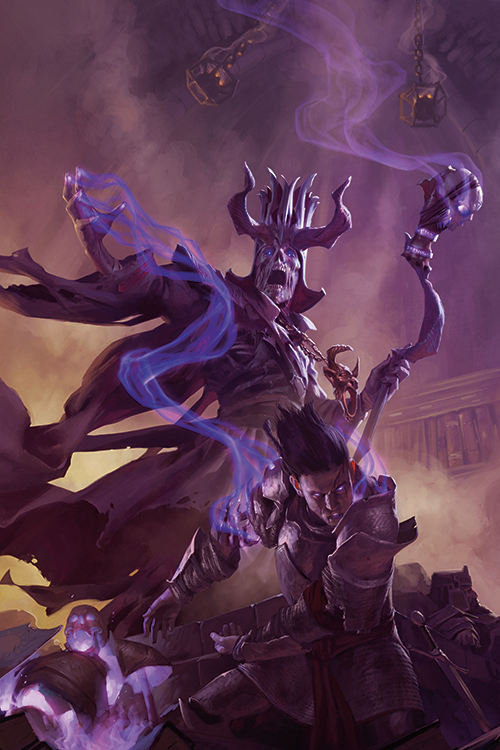
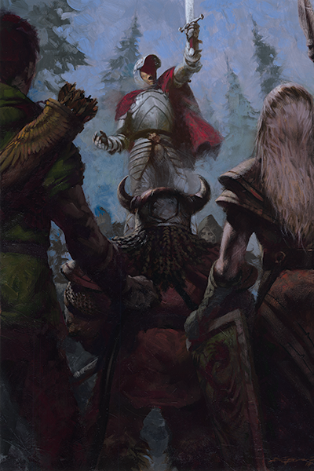

The Dungeons & Dragons roleplaying game is about storytelling in worlds of swords and sorcery. Like
games of make-believe, D&D is driven by imagination.
It’s about picturing a crumbling castle in a darkening forest and imagining how a fantasy adventurer
might react to the challenges that scene presents.
In this fantasy world, the possibilities are limitless.
Unlike a game of make-believe, D&D gives structure to the stories—a way of determining the consequences
of the adventurers’ actions.
Players roll dice to determine whether their attacks hit or miss and whether their characters can scale
a cliff, roll away from the strike of a magical lightning bolt, or pull off some other dangerous task.
Anything is possible, but the dice make some things more probable than others.
If you're new to D&D or want to start learning more about the basics of the game,
this website walk through a few of the introductory concepts below as well as help guide you to further
information.
Role of Players

When you play D&D, you take on the role of an adventurer: a skilled fighter, a devout cleric, a deadly
rogue, or a spellcasting wizard.
Your first step is to imagine and create a character of your own. Your character is a combination of
game statistics, roleplaying hooks, and your imagination. You choose a race (such as human or halfling)
and a class (such as fighter or wizard). You also invent the personality, appearance, and backstory of
your character. Once completed, your character serves as your representative in the game.
With some friends and a little imagination, you strike out on grand quests and daring adventures,
testing yourself against an array of challenges and bloodthirsty monsters.
You can find out more briefly and extensive information for players in the Basic Rules.
Dungeon Master's Guide

One player takes on the role of the Dungeon Master, the game’s lead storyteller and referee. The DM is
in charge of the adventure, which appears in the adventure book, while the characters navigate the
adventure’s hazards and decide where to explore.
The DM might describe the entrance to Cragmaw Castle, and the players decide what they want their
adventurers to do. Will they boldly stride up to the fallen gate, or try to sneak up in case anyone’s
watching through those arrow slits? Circle around the castle looking for another entrance? Or cast a
spell to cloak themselves in invisibility?
The DM determines the results of the adventurers’ actions and narrates what the characters experience.
Because the DM can improvise to react to anything the players attempt, D&D is infinitely flexible, and
each adventure can be exciting and unexpected.
You can find out more information for DMs in the Dungeon Master's Guide.
Character Creation

Once you learn the basics of D&D, you can dive into character creation selection.
Think about the kind of adventurer you want to play. You might be a courageous fighter, a skulking
rogue, a fervent cleric, or a flamboyant wizard. Or you might be more interested in an unconventional
character, such as a brawny rogue who likes hand-to-hand combat, or a sharpshooter who picks off enemies
from afar. Do you like fantasy fiction featuring dwarves or elves?
Try building a character of one of those races. Do you want your character to be the toughest adventurer
at the table? Consider the fighter class.
Once you have a character in mind, you can create your own avatar in the Dungeons & Dragons world.
Check out the Character Creation selection to create a character sheet.